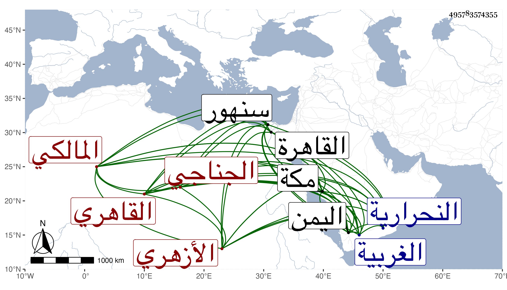

0902Sakhawi.DawLamic.ITO20230111-ara1.EIS1600.495783574355
Biography ID: 495783574355
384
محمد بن علي بن أحمد بن سالم بن سليمان البدر الجناجي بجيمين الأولى مفتوحة بينهما نون خفيفة نسبة لجناج قرية بين النحرارية وسنهور من الغربية ثم القاهري الأزهري المالكي وربما يعرف هناك بابن وحشي . ولد في سنة ستين أو بعدها تقريبا وحفظ القرآن ونحو النصف الأول من مختصر الشيخ خليل ومن ألفية النحو واشتغل عند داود القلتاوي في الفقه والعربية بل وقرأ على السنهوري النصف من توضيحها وسمع عليه غير ذلك وقرأ على الديمي البخاري وسمع على الكمال بن أبي شريف في مسلم وعلى الشاوي في البخاري بحضرة الخيضري وحج غير مرة ولقيني في سنة سبع وتسعين بمكة فقرأ على الموطأ ونحو النصف الأول من الشفا مع سماع باقيه ولازمني في غير ذلك سماعا وتفهما واختص بالشمس الحلبي التاجر ثم بأبي الفتح بن كرسون وسافر معه إلى اليمن فحصل بعض ما ارتفق به وعاد بعد أشهر في سنة تسع وتسعين واستمر مقيما بمكة يقريء ولد المشار إليه بعد رجوع الأب إلى القاهرة ومعه جارية يتقنع بها ولا بأس به .
